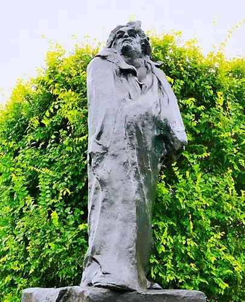
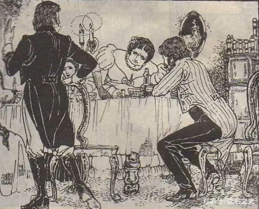

人物简介：奥诺雷·德·巴尔扎克（Honoré·de Balzac，1799年5月20日—1850年8月18日），法国小说家，被称为“现代法国小说之父”，生于法国中部图尔城一个中产者家庭。
"他的一生是短暂的，但却非常充实，他的作品比数不清的日子还要丰富。悲哉！这位力量惊人、从不疲倦的工作者，这位哲学家，这位思想家，这位作家，这位天才，在我们中间经历了所有伟人都不能避免的那种充满风暴和斗争的生活。"这是雨果对他的评价。
|
风暴与斗争？让我们来详细看看，他这一生都遭遇了什么波折。
巴尔扎克自从出生起，便不受他那年仅18岁的母亲的喜爱。刚一出生下来，他就被送养给别人家，后来又被送到教会学校。在巴尔扎克8岁那年，年轻的母亲经不起诱惑，撇开年老的父亲，偷偷和另一个男人生下了一个私生子，这使巴尔扎克失去了母亲的温存。而在学校，他又受到类似于软禁与洗脑般的教育。他的童年毋庸置疑是一片看不到头的黑暗。
上了大学后，巴尔扎克由于和家里人爆发冲突，不肯学习法律而是执意要钻研文学。父亲一怒之下断掉了给他的经济支持，潦倒的巴尔扎克并没有放弃梦想，他从家中搬出，住进了贫民窟里四处漏风的小阁楼，没日没夜地奋笔疾书。后来他在《驴皮记》中这样吐槽：“再没有什么东西比这阁楼更令人讨厌的了，墙壁又脏又黄，一股穷酸气……房顶倾斜，几乎碰到了地板，从松散的瓦片间可以看到天空……”
|
但是俗话说：“文章不能锅里煮，百无一用是书生。”家徒四壁的拮据生活是不能长久维持的。巴尔扎克曾“为了五斗米折腰”创作了一些滑稽小说，神怪小说。但是这些终究只是杯水车薪。在得到他人的资金赞助后，他做起了出版商，经营铸字厂、印刷厂。可是这些不但没有给他带来可观的收益，反倒使他债台高筑。他没了办法，21万法郎的债务逼着他回到了阁楼上方，不停地喝着含有粗渣的黑咖啡，嚼着干面包，为了谋生而写作。百天与黑夜的轮替对他仿佛已经失去了意义，重大的打击让他的精神似乎异于常人：他时而疯癫，时而傻笑，有时甚至为了书中的人物大发怒火。
|  |
 |
 |
但是，这并不代表他认输了。你可以说他输了，输给了时间，输给了生命，输给了残酷无情剥削压迫的资本主义、拜金主义。因为他穷极一生留下的“不过”是些要流芳百世的千古著作罢了，他最终因为过度劳累而死。他看够了世态炎凉，人情冷暖；看够了纸醉金迷，奢靡腐朽；看够了锱铢必较，小肚鸡肠。于是《高老头》《欧也妮葛朗台》《人间喜剧》一系列脍炙人口的作品从他笔下流出。从中我们已经得以一窥当时人们的丑陋与一沓沓厚重的钞票中渗出的鲜血。他用笔和生命揭开了资本丑恶的嘴脸，我想这已经是一个凡人能取得的莫大的胜利了。